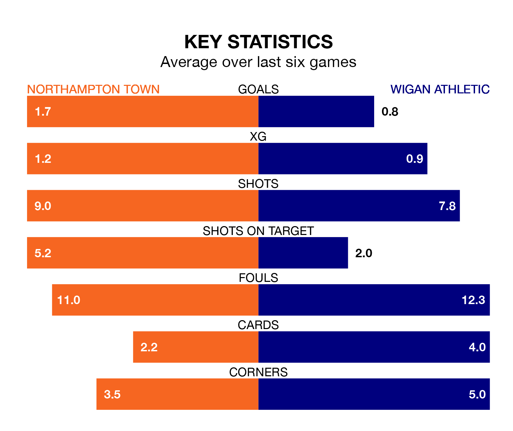

Wigan Athletic travel to Northampton Town on Saturday in EFL League One.
The visitors come into the game on the back of a draw in their last match, having tied with Barnsley 1-1 away, with a goal from Jonny Smith.
The Cobblers, meanwhile, won their last match, 1-0 against Cheltenham Town, with their goal scored by Kieron Bowie.
With 35 goals in 25 games so far this season, Wigan are scoring more than average in the league with 1.4 goals per game. And they are conceding fewer than average, letting in 30 goals at a rate of 1.2 per game.
Northampton, meanwhile, are below average scorers, with 1.2 goals per game, compared to a league average of 1.3. They have conceded 1.3 goals per game.
Town are in good form in EFL League One, with four wins and a draw from their last six games.
With a win and two draws over that period, Athletic's form is much worse – they have taken five points from 18, compared to the Cobblers' 13.
The hosts are ninth in the table after 25 games, of which they have won 11 and drawn three, earning 36 points.
The Latics are one place behind Northampton in 10th, with 10 wins and five draws putting them on 35 points.
In Sam Hoskins, Northampton have one of the league's sharpest shooters so far this season. He has notched 12 goals in 23 appearances, to sit seventh in the scoring charts.
The away side's top scorers, with seven goals each, are Charlie Wyke and Stephen Humphrys.
Saturday's match will be refereed by Anthony Backhouse, who has taken charge of four EFL League One games so far this season, issuing one red card and booking 13 players. He has not awarded any penalties.
The last Wigan game Backhouse refereed was the 2-1 loss away at Blackpool on September 2. He is yet to oversee a match featuring Northampton this season.
Updated: 13:38 (UTC), 10/01/24